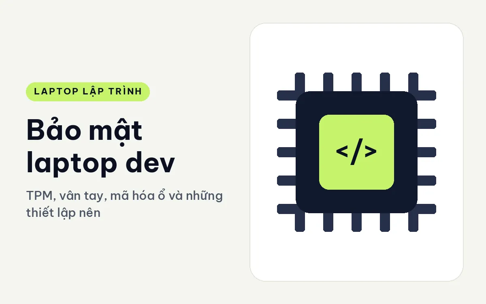
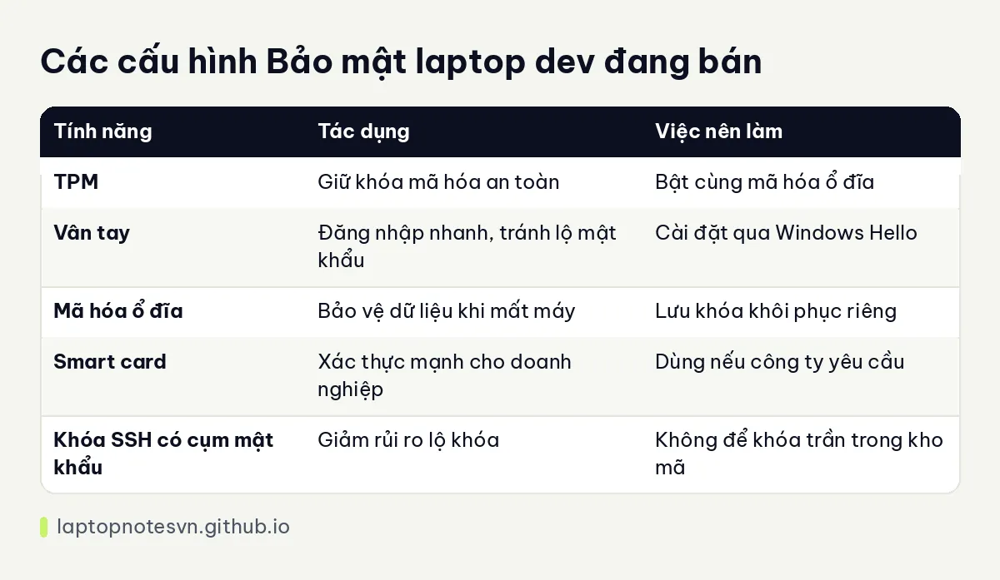

Bảo mật laptop dev - TPM, vân tay, mã hóa ổ và những thiết lập nên bật

Máy của dev chứa nhiều thứ nhạy cảm hơn người ta tưởng: mã nguồn công ty, khóa SSH, token truy cập đám mây, tệp cấu hình có mật khẩu cơ sở dữ liệu. Mất máy, máy bị truy cập trái phép hay đơn giản là bỏ quên ở quán cà phê đều có thể gây thiệt hại lớn. Một vài thiết lập bảo mật cơ bản, nếu bật từ đầu, giảm đáng kể rủi ro mà không làm chậm công việc.
Bài này giải thích các tính năng bảo mật phần cứng thường thấy, thiết lập nên bật và máy đang bán có những tính năng này. Đây là hướng dẫn chung, quy định bảo mật của công ty bạn là ưu tiên nếu có.
TPM, vân tay và các tính năng phần cứng
TPM là chip bảo mật gắn trong máy, lưu khóa mã hóa ở nơi phần mềm khó đọc trộm. Nó giúp mã hóa ổ đĩa an toàn hơn và là yêu cầu của Windows 11. TPM có hai dạng: TPM rời (dTPM) là chip riêng và TPM firmware tích hợp trong chip, cả hai đều đạt mục đích phổ thông, dạng rời thường được xem là mạnh hơn.
Cảm biến vân tay cho phép đăng nhập nhanh qua Windows Hello. Tiện lợi khi bạn khóa và mở máy nhiều lần mỗi ngày, vì không phải gõ mật khẩu dài. Nó cũng giảm nguy cơ lộ mật khẩu khi có người nhìn sau lưng.
Smart card là thẻ chứa chứng chỉ, dùng trong môi trường doanh nghiệp đòi hỏi xác thực mạnh. Ổ SSD tự mã hóa là ổ có mã hóa phần cứng sẵn, hoạt động cùng TPM để bảo vệ dữ liệu khi ổ bị tháo ra. Webcam có nắp che và công tắc tắt micro là các chi tiết nhỏ nhưng thiết thực.
Thiết lập nên bật
Thứ nhất là mã hóa toàn bộ ổ đĩa. Trên Windows, đó là BitLocker; trên Linux là LUKS. Nếu máy mất, dữ liệu trong ổ không đọc được nếu thiếu khóa. Hãy lưu khóa khôi phục ở nơi an toàn, không để cùng máy.
Thứ hai là mật khẩu mạnh cùng khóa màn hình tự động khi rời máy. Thói quen nhấn phím tắt khóa màn hình mỗi khi đứng dậy là biện pháp rẻ nhất mà hiệu quả.
Thứ ba là bảo vệ khóa SSH. Đặt cụm mật khẩu cho khóa, và nếu có thể dùng khóa phần cứng hoặc kho lưu bí mật của hệ điều hành thay vì để tệp khóa trần. Đừng đưa khóa vào kho Git công khai.
Thứ tư là cập nhật hệ điều hành và firmware thường xuyên, vì nhiều lỗ hổng được vá qua các bản này. Thứ năm là xác thực hai lớp cho tài khoản Git, đám mây và email.
Bảo mật khi đi lại
Ở nơi công cộng, hãy dùng màn hình lọc nhìn trộm nếu hay xử lý nội dung nhạy cảm, và tránh dùng Wi-Fi lạ cho việc quan trọng. Nếu buộc phải dùng, hãy kết nối qua VPN. Đừng để máy mở và rời đi, kể cả một phút.
Bật tính năng định vị và xóa máy từ xa nếu hệ điều hành hay công cụ quản trị của công ty hỗ trợ. Đó là lớp bảo vệ cuối cùng khi máy mất. Với dev làm việc từ xa, nội dung này đi cùng bài laptop cho dev freelance làm từ xa.
Những sai lầm hay gặp
Sai lầm phổ biến nhất là bật mã hóa ổ đĩa nhưng để khóa khôi phục trên chính máy đó, hoặc quên lưu hẳn. Khi máy hỏng bo mạch, dữ liệu coi như mất. Hãy lưu khóa ở hai nơi tách biệt máy, ví dụ trình quản lý mật khẩu và một bản giấy cất cẩn thận.
Sai lầm thứ hai là dùng chung một mật khẩu cho nhiều dịch vụ, hoặc lưu token trong tệp văn bản ngay trong thư mục dự án. Hãy dùng trình quản lý mật khẩu, tệp môi trường được loại khỏi Git, và xoay khóa định kỳ. Sai lầm thứ ba là bỏ qua bản cập nhật firmware vì sợ phiền, trong khi đó là nơi hãng vá nhiều lỗ hổng cấp thấp.
Tóm gọn trong một bảng

| Tính năng | Tác dụng | Việc nên làm |
|---|---|---|
| TPM | Giữ khóa mã hóa an toàn | Bật cùng mã hóa ổ đĩa |
| Vân tay | Đăng nhập nhanh, tránh lộ mật khẩu | Cài đặt qua Windows Hello |
| Mã hóa ổ đĩa | Bảo vệ dữ liệu khi mất máy | Lưu khóa khôi phục riêng |
| Smart card | Xác thực mạnh cho doanh nghiệp | Dùng nếu công ty yêu cầu |
| Khóa SSH có cụm mật khẩu | Giảm rủi ro lộ khóa | Không để khóa trần trong kho mã |
Đối chiếu với máy còn hàng
Lenovo ThinkPad T14 Gen 6 (2025) có cảm biến vân tay, hỗ trợ Windows Hello và dTPM 2.0. Máy nặng 1,53 kg, có bản Ultra 5 235U 16GB hoặc bản Ultra 7 258V 32GB. Đây là cấu hình đủ cho đa số dev doanh nghiệp.
HP ProBook 4 G2i 14 AI (2026) có TPM 2.0, vân tay và bàn phím chống tràn, RAM 16GB DDR5 5600, hai cổng USB-C 20Gbps, hai USB-A, HDMI 2.1. Một lựa chọn thực tế cho môi trường văn phòng yêu cầu bảo mật cơ bản.
DELL Pro Max 14 MC14250 - Mobile Workstation (2025) có TPM, SSD tự mã hóa, hai cổng Thunderbolt 4. Dòng Pro Max 16 MC16250 còn có smart card, TPM 2.0, hợp người cần xác thực mạnh trong môi trường doanh nghiệp.
Với người mới tìm hiểu máy doanh nghiệp, bài Dell Pro 14 cho lập trình cho thấy một cấu hình phổ thông có TPM và vân tay tùy chọn.
Đăng ngày 09/11/2026